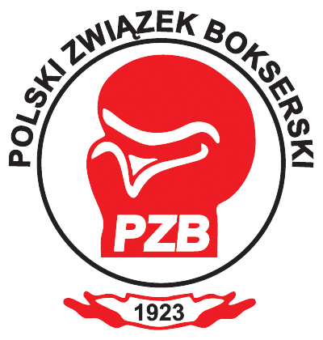

Boks w polsce
Dopiero po zakończeniu wojny, wraz z powrotem do wolnej Polski ludzi, którzy przebywali na Zachodzie Europy, można mówić o bardziej zorganizowanych formach pracy sportowej. Byli żołnierze i oficerowie, zapoznawszy się z walką na pięści we Francji, w Niemczech, Anglii, a także w Ameryce, przenieśli ten sport do kraju. Szczególną rolę w popularyzowaniu boksu odegrała YMCA – Young Men’s Christian Association, która w okresie powojennym organizowała w Europie szereg pokazów w różnych dyscyplinach, w tym w pięściarstwie. Pierwsze takie zawody w Polsce odbyły się z początkiem 1920 roku, a ich uczestnikami byli m.in. angielscy marynarze.
Ten pokaz nie wywołał jednak szerszego oddźwięku, boks nie był bowiem dla społeczeństwa sportem zrozumiałym, tak jak na przykład zapaśnictwo. W tym samym czasie poza YMCA w Warszawie, boks znalazł się w programie Polskiego Towarzystwa Atletycznego, a w Poznaniu powstał Klub Atletyczny „Zbyszko”, zaraz potem w Łodzi – „Łódzki Klub Bokserski”. Bardzo ożywione inicjatywy cechowały Inowrocław, gdzie po powrocie z Francji działał por. Wiktor Junosza-Dąbrowski, założyciel Kujawskiego Klubu Bokserskiego.
Wielką zasługą stowarzyszenia YMCA było zorganizowanie pod koniec 1920 roku w Warszawie trzymiesięcznego kursu Szkoły Wychowania Fizycznego, w której programie był boks. Absolwentem tej szkoły był m.in. Eugeniusz Nowak, […] wielki propagator boksu, zawodnik, nauczyciel, działacz. W roku 1921 YMCA zorganizowała w Warszawie pierwsze nieoficjalne mistrzostwa Polski, w których startowali zawodnicy z Warszawy i Gdańska, a w tym samym czasie w Poznaniu klub „Zbyszko” urządził pierwsze mistrzostwa Wielkopolski, w których uczestniczyli zawodnicy poznańscy, inowrocławscy i grudziądzcy. Ośrodek poznański wyróżniał się wówczas wielką aktywnością. Nauczali tam boksu Felicjan Latowski – po powrocie z Francji, Maksymilian Brencz i Franciszek Szumnarski, a także kpt. Jan Baran w ramach Centralnej Wojskowej Szkoły Gimnastyki i Sportów.
W Warszawie poza wspomnianymi już Stanisławami Szczepkowskim i Budnym największe zasługi w popularyzowaniu walki na pięści położyli: mjr Franciszek Balcerkiewicz, por. Kazimierz Laskowski, wyborny szermierz i pięściarz, Leon Berski, Eugeniusz Nowak, a także — chociaż głównie zajmował się zapasami – Władysław Pytlasiński, prezes Polskiego Towarzystwa Atletycznego, pod którego opiekę Związek Związków Sportowych oddał boks. W Łodzi krzewili boks początkowo inż. Franciszek Kannenberg oraz po przeniesieniu się ze stolicy Eugeniusz Nowak. Na Śląsku, gdzie najszybciej poczęły tworzyć się kluby, wiodącą rolę odgrywali Wilhelm Snopek i Ryszard Denisch.
Niemalże we wszystkich ośrodkach w roku 1923 odbywały się zawody mające na celu spopularyzowanie walki na pięści. Nie było specjalnego regulaminu walki, opierano się na przepisach zaczerpniętych z zawodowstwa, w rękawicach 6-uncjowych, walcząc nawet po 6-10 rund.
Miejscem spotkania 14 prekursorów boksu była redakcja „Stadionu” w Warszawie przy ulicy Szucha 23. Z inicjatywą utworzenia PZB od dawna występował Wiktor Junosza-Dąbrowski, publikując artykuły o tematyce bokserskiej w „Rzeczpospolitej” i w „Stadionie”. Opracował on, czerpiąc wzorce z Francji, projekt statutu i regulaminu PZB i te dokumenty były przedmiotem obrad 2 grudnia 1923 roku.